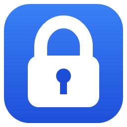

Bóveda
Aplicación de escritorio para Windows, de uso personal, que guarda contraseñas, notas, tarjetas, documentos y archivos cifrados en tu propio equipo.
Qué hace
- Cifra todo localmente con AES-256-GCM y una clave derivada de tu contraseña maestra (Argon2id).
- No tiene servidores ni cuentas propias: los datos no se envían a ningún sitio controlado por el desarrollador.
- Opcionalmente se conecta a tu cuenta de Google para:
- recuperar la bóveda si olvidas la contraseña maestra, y
- guardar copias de seguridad ya cifradas en una carpeta privada de la app en tu Google Drive.
Uso de datos de Google
Bóveda solo solicita tu dirección de correo y el permiso drive.appdata, que da acceso únicamente
a una carpeta oculta reservada para la app. No puede ver, leer ni modificar el resto de tu Google Drive.
Detalles en la política de privacidad.